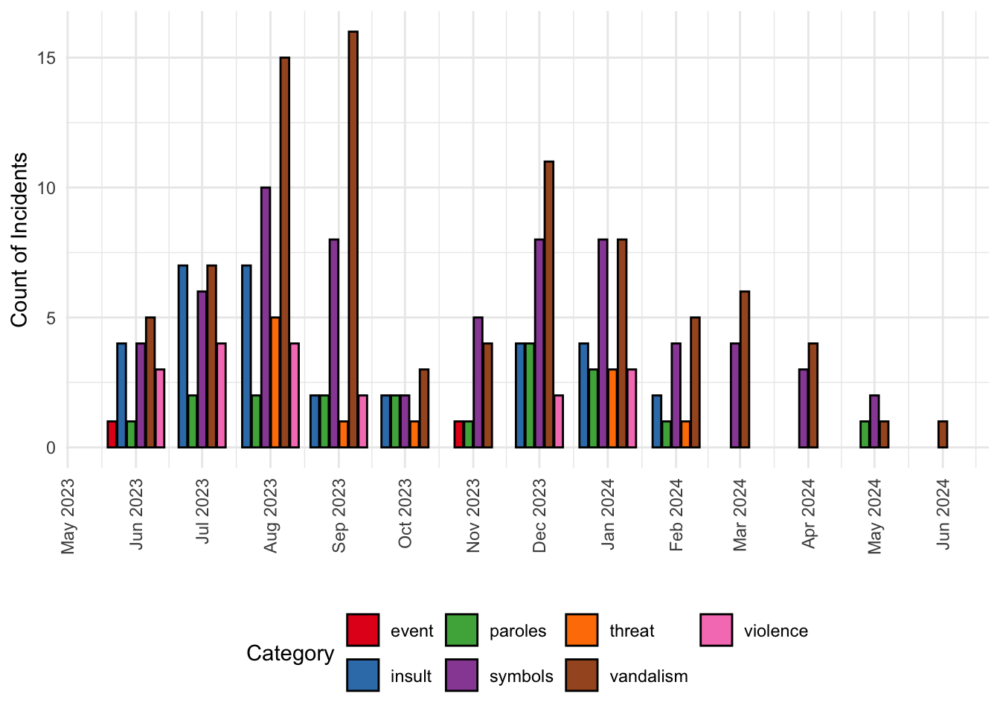
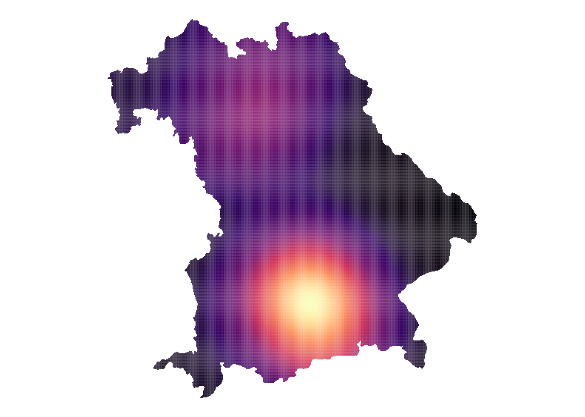
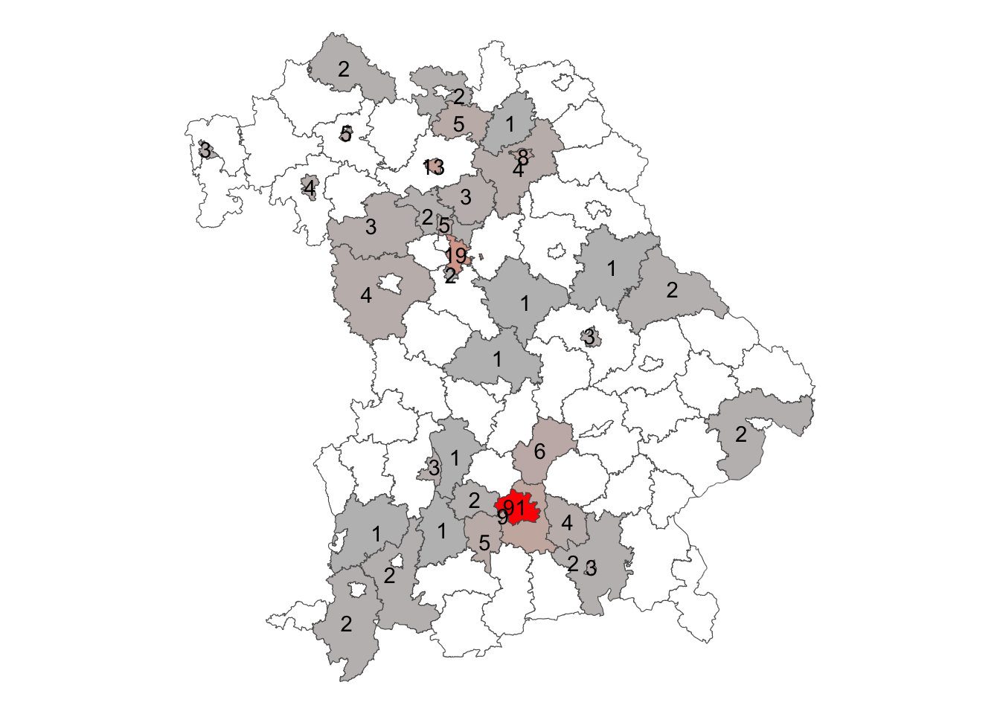

![]()
library(readxl)
library(gtranslate)
aida_original_coding <- read_excel("aida2023_2024.xlsx", sheet="original_coding")
aida_pivoted <- read_excel("aida2023_2024.xlsx", sheet="pivot")
## make sure this is a date object to work with
aida_pivoted$date <- as.Date(aida_pivoted$date)If you are a student in one of my courses, you may be required as part of your course assessment to write a data report. This blog provides a demonstration that would be sufficient to get a good mark. It is based on a previous student’s data report. The latter sections also show some extra pieces that would be one way of developing the data report further.
A good data report
Introduction
The far-right phenomenon in Germany is frequently discussed in media and public discourse. Far-right agitation can take various forms: the far right is organisationally diverse, encompassing parties, movements, movement-parties, groupuscules, networks, lone actors and more (Castelli Gattinara & Pirro, 2018). In Germany, much scholarly attention has been directed towards the realm of far-right party politics; much less towards smaller-scale right-wing extremist incidents.
This data report aims to provide an overview of different types of activities assigned to a far-right ideology in a specific regional and temporal context. By focusing on these activities rather than individual parties or groups, this study seeks to identify symptomatic behaviours and incipient processes of radicalisation. In particular, this report draws on data from Bavaria, especially Munich.
The Antifaschistische Informations-, Dokumentations- und Archivstelle München e. V. (a.i.d.a.) provides a detailed chronology of incidents of far-right activity in Bavaria. This report draws on the last twelve months of this chronology, encompassing all listed incidents, including minor actions such as pasting far-right stickers. (Such minor incidents may be significant, for example indicating the presence of a far-right group or individual in a particular area.)
The report is structured as follows: first, it briefly discusses some theoretical foundations. Then, it outlines the development of the far-right in Bavaria after 1945. Next, it introduces the data, including novel coding work. The report discusses what the data show and concludes by summarising and discussing possible limitations.
The far right in Germany and Bavaria
In the post-war era, far-right activity has been present in Bavaria, manifesting in different forms and intensities over time (cf. Pfahl-Traughber 2019). This overview aims to provide context for the data by examining the development of far-right structures in the region.
Here, the term right-wing terrorism refers to violent acts committed with a racist or anti-Semitic motive, linked to central far-right ideological tenets (nationalism, exclusionism, xenophobia, nativism, authoritarianism and populism, Mudde 2019). Incidents of right-wing terrorism increased in the 1960s, driven by nationalist and anti-communist sentiments. During the 1970s, Jewish institutions and representatives became more frequent targets.
In the 1990s, a wave of attacks on refugees and migrant workers epitomised a spike in far-right violence in Germany, particularly in eastern regions (Virchow 2022). The total extent of far-right violence during this period is unclear due to inconsistent classification practices1 and under-reporting issues, but official figures from German law enforcement authorities (i.e., Bundeskriminalamt) show a sharp increase in far-right violence. Moreover, places such as Rostock-Lichtenhagen, Solingen, Mölln, and Hoyerswerda witnessed highly visible racist attacks and pogroms.
Since the reunification of Germany in 1990 various forms of far-right structures have existed in Bavaria, including parties, non-party organisations, associations, and fraternities. Some parties include Die Republikaner, Deutsche Volksunion, and currently the Alternative für Deutschland (AfD). There are active movement-parties like the Nationaldemokratische Partei Deutschlands (NPD) (cf. Vollhardt 2024) and Der III. Weg. There are far-right fraternities like the Burschenschaft Danubia München and Teutonia Prag zu Würzburg, which organise events and have links to other far-right organisations. Movement organisations include the AfD’s youth group Junge Alternative (JA) and spin-offs of the Identitarian movement: Requonquista 21, Lederhosen Revolte, and Isar Legion.
Overall, this overview demonstrates the persistent presence of far-right structures and activity in Bavaria since 1945.
Data
The chronology of the Antifaschistische Informations-, Dokumentations- und Archivstelle München e. V. (a.i.d.a.) contains data on far-right activities in Bavaria, particularly Munich, extending back decades. The chronology is structured temporally, logging the date of the incident and providing a short description. The aim of this report is to focus on activities from the last year.
Based on the descriptions, I assigned non-mutually exclusive categorical codes to each incident. Seven categories, inductively drawn from the descriptions, are included:
- vandalism: incidents of graffiti, tags, and damage. Stickers, for example, by far-right movements like the Identiterians are also included here;
- paroles: incidents where (often intoxicated) people shouted xenophobic paroles without addressing a specific person;
- symbols: graffiti and tags that are explicitly forbidden, such as the swastika or SS-runes. It furthermore includes the use of these symbols on apparel or tattoos as well as the use of the Hitlergruß;
- violence: all physical offences against people, physical attacks and also offences like spitting;
- threat: all kinds of threats of violence, such as hate-mail addressed to politicians as well as reported digital threats;
- insult: non-physical attacks against people, like racist, antisemitic, or homophobic insults;
- events: meetings and non-public assemblies of far-right actors, such as lectures at far-right fraternities.
Several categories can apply to one incident: for instance, an incident of vandalism may also involve the use of illegal symbols (e.g., a swastika) and a threat.
Note that the coding deals with incidents, an occurrence on a particular date, not actors. Sometimes these incidents involve one actor, multiple, or none at all. By coding incidents, it is far-right activity data that is generated. As mentioned above, the last year of activity was coded, June 2023 to May 2024. There are 137 incidents for this period. To these incidents, 232 categories were coded. Together, these data enable a descriptive analysis of far-right activity over the past year.
A couple limitations to the data deserve mention at the outset. First, the data relies on published reports from police and news services, so they do not reflect all incidents of far-right activity but merely those that are reported on. Someone’s property might be affected by vandalism, for example, and it might not be captured in the data if they do not report it. Second, the data focus on Munich, but also offers coverage of elsewhere in Bavaria. The data do not cover all incidents (again, only those that are reported), but there is probably an under-reporting issue for places outside of Munich. It is not entirely clear from a.i.d.a.’s website hoe they assemble their chronology, but it seems probable that, since the archive is based in Munich and since (more generally) there are more news reports and police coverage in Munich, that the incidents reported are biased towards Munich compared to the rest of Bavaria.
Descriptive analysis
Table 1 reports the frequency of the various categories and their percentage of overall incidents.
## data table with incident type and proportion overall
library(kableExtra)
library(dplyr)
library(lubridate)
aida_pivoted %>%
## group them by the category
group_by(category) %>%
## get the sum of how many of each type of incident occurred
summarise(Count=n()) %>%
## get the total number of incidents
mutate(All=sum(Count),
## calculate the percentage
Percentage=(Count / All) * 100) %>%
## select the variables for a data table
dplyr::select(category, Count, Percentage) %>%
## format the Percentage column with the percent sign
mutate(Percentage=sprintf("%.2f%%", Percentage)) %>%
## create data table
kable(caption="Number of incidents by type and their percentage of all incidents. (Data from a.i.d.a.)",
col.names=c("Category", "Number of incidents","Percentage of total incidents"),
align = c("r", "c", "c"),
digits=1) %>%
kable_styling(full_width=F, font_size=20) %>%
row_spec(0, bold=T)| Category | Number of incidents | Percentage of total incidents |
|---|---|---|
| event | 2 | 0.86% |
| insult | 32 | 13.79% |
| paroles | 19 | 8.19% |
| symbols | 64 | 27.59% |
| threat | 11 | 4.74% |
| vandalism | 86 | 37.07% |
| violence | 18 | 7.76% |
In the last year, two events organised by far-right actors were listed in the a.i.d.a. chronology. The meeting organised by Reconquista 21 and the Identiterians in Dasing, noted in the Bavarian Verfassungsschutz report, was in the chronology. The other event took place on 23 June in Munich: the fraternity Stauffia organised a summer event that promoted radical libertarian and anti-democratic ideology. Here is a demonstration of the role of fraternities in networking far-right actors. Other agitations like demonstrations, protests, leafletting and petitioning were not recorded in the a.i.d.a. chronology for the past year.
Vandalism accounts for the highest number of incidents in the last year of the a.i.d.a. chronology. This category encompasses a wide range of incidents that demonstrate an obvious far-right motivation, including various forms of graffiti, tags, and damage. This category also includes stickers from far-right groups, which were increasingly found in the south of Munich during the summer of 2023, particularly those bearing the logo of the Identitarian movement.
Cases involving explicitly forbidden NS-symbols, such as the swastika or SS-runes, are recorded under the category of “symbols”. They are indicative of an ideological connection to neo-Nazism. This category also encompasses instances where individuals performed the “Hitlergruß” (‘Hitler greeting’) or displayed NS-symbols in the form of T-shirt prints or tattoos. The frequency of swastika graffiti was striking, highlighting the prevalence of far-right ideologies and symbols in public spaces.
The categories “vandalism” and “symbols” together represent a majority of incidents documented by the a.i.d.a. chronology. These two categories provide insight into the extent to which far-right groups or individuals are engaging in destructive behaviour aimed at promoting their ideology or intimidating marginalised communities.
Verbal attacks, captured by the category “insult,” were also a common occurrence and the third most frequent type of incident. This category includes all forms of discriminatory verbal attacks motivated by racism, homophobia, xenophobia, or antisemitism. In some cases, perpetrators escalated from verbal threats to physical violence.
It is important to distinguish between instances where individuals are explicitly targeted with discriminatory language and those where they engage in aimless shouting of slogans, often without addressing a specific person. The category “paroles” was created to capture the latter incident, which includes incidents where individuals, frequently intoxicated or mentally unstable, shout discriminatory phrases without directly targeting anyone.
There is thus a meaningful subdivision among the categories: between those covering direct attacks against individuals (insult, threat, violence) and those encompassing instances where far-right actors promote their ideology through more conspicuous signs (vandalism, symbols, events, paroles). These two types of categories likely have different effects on individuals and communities and require distinct measures to prevent and address them. In the case of direct attacks against individuals, swift action is necessary to protect those affected and prevent future occurrences. These incidents can also be linked to other types of far-right activities, such as vandalism. However, monitoring instances where perpetrators draw attention to themselves through more subtle means (vandalism, symbols, events, paroles) is crucial for understanding their motivations and connections to far-right groups or parties or broader far-right ideological strains.
By documenting these incidents closely, it becomes possible to identify patterns and trends in far-right activities, which can inform strategies aimed at preventing such incidents and promoting greater safety and inclusivity within communities.
The course of events
Figure 1 shows the development of incidents over time. There is a conspicuous rise in incidents of vandalism in August and September 2023. The explanation for this aberrant spike of incidents seems fairly clear: Bavarian regional election took place in September 2023. Several incidents in the run up to the election involved vandalism against election posters. Notably, posters from the Green party were disproportionately targeted by vandals during this period, for example (auto-translated with El-Desouky’s gtranslate package):
Munich. The “B90/The Green” state parliament member Benjamin Adjei reports on several hostility and attacks. Towards the end of July two election posters from Adjei were only lit racist (“N ****, no thanks”). On another poster, a gunshot wound on his face was symbolized with down -flowing blood. Other poster wood stands were also met. Source: Article of the “Bavarian Radio” (online version, www.br.de) of August 24, 2023.
library(ggplot2)
library(RColorBrewer)
## define the Set1 palette and exclude the 6th colour (yellow), which doesn't show up well
colors <- brewer.pal(9, "Set1")[-6]
aida_pivoted %>%
## get the month and year from the date column
mutate(month=floor_date(date, "month")) %>%
## group by month and category
group_by(month, category) %>%
## count incidents of each category in each month
summarise(count=n()) %>%
# create a bar plot
ggplot(aes(x=month, y=count, fill=category)) +
geom_bar(stat="identity", position=position_dodge2(width=0.9, preserve="single"), colour="black") +
## format x-axis for months
scale_x_date(labels=scales::date_format("%b %Y"), breaks="1 month") +
scale_fill_manual(values=colors) +
labs(x="", y="Count of Incidents", fill="Category") +
theme_minimal() +
theme(axis.text.x=element_text(angle=90, hjust=1, vjust = 0.5),
legend.position = "bottom")

It is also noteworthy that, of the 137 incidents of the period under study, 111 involved either vandalism and/or symbols; and these two co-occurred in the same incident 39 times. The reasons for this could be many, but Shoshan’s (2016, e.g., p. 97) reflection on the thorough enforcement of laws against proscribed symbols could be instructive for why this crime/incident accounts for such a large number of incidents.
Violence seem to be rare, accounting for only 18 incidents over the past year—and none since January (as of July 2024). There are no incidents of lethal violence. Several cases involve aggression towards persons with a migration background, for example, an incident from 24 June 2023:
Schweinfurt. A 21 and a 29-year-old offend a 33-year-old man with Rwandian migration history at the main train station on Saturday morning, hit him in the face and throw it with change. The heavily alcoholic men are arrested and displayed. The affected person does not suffer any injuries in need of treatment. Source: Press release from the Lower Franconia police headquarters of June 24, 2023.
Another such case occurred on 18 December 2023:
Munich. A 73-year-old senior citizen attacks a 31-year-old woman with a Chinese family history at 9:00 a.m. at 9:00 a.m. When the aggressor wants to flee and stands in the way of a 48-year-old, she also puts it on the face. Source: Press release from the Federal Police Directorate in Munich of December 19, 2023.
This sort of aggression or violence seems to fit with the typical image of far-right violence, that is, motivated by racist or xenophobic attitudes.
Conclusions
It is essential to note that the data presented and discussed in this report are not representative of all far-right incidents that occurred during this period. The a.i.d.a. chronology includes only a selection of cases, those reported in police statements or public media or reported to a.i.d.a. itself. Consequently, it should be acknowledged that not every incident with a far-right motivation that took place within the last 12 months may be accounted for in this analysis.
This report presented a descriptive analysis, noting the prevalence of vandalism and symbol incidents, especially preceding Bavaria’s regional elections. It also noted that recorded incidents of aggression or violence fit the stereotypical image of far-right violence: motivated by racism or xenophobia.
To go beyond this reports descriptive analysis would involve the challenging task of determining the underlying motivations behind specific incidents. From a cursory reading of the incident descriptions, it is sometimes difficult to say with certainty whether far-right ideology was the primary driving force behind these events. This is especially so for the “paroles” category of incidents, where individuals engage in discriminatory behaviour while intoxicated or confused.
Despite these and previously discussed limitations, the data from the a.i.d.a. chronology provide insights into far-right activities in Munich and Bavaria. While much research on the far right in Germany focuses on existing structures and organisations, how they have endured and changed in the post-war era, the a.i.d.a. data reflects activity not organisation or even necessarily organised activity. Most of the incidents make no reference to specific far-right organisations. Instead, the record of incidents are more akin to attitudinal surveys: they show the prevalence of certain attitudes, ideologies, differing from surveys in that the incidents reflect action on behalf of those attitudes.
The data from the a.i.d.a. offers ongoing monitoring of far-right activities in Munich and Bavaria, building on research of far-right movements in Germany and Bavaria after 1945 (Manthe 2021). Further research could use this data to examine the interplay between seemingly insignificant events and larger ideological structures and indeed organisational ecologies. Researchers can thereby gain a deeper understanding of the complex dynamics driving far-right movements in this region.
Data availability
For a data report you are usually required to submit your data collection. For this example, you can download the data by clicking the button below.
Research sources cited
Castelli Gattinara, Pietro, and Andrea L.P. Pirro. 2019. ‘The Far Right as Social Movement’. European Societies 21(4): 447–62.
Manthe, Barbara. 2021. ‘On the Pathway to Violence: West German Right-Wing Terrorism in the 1970s’. Terrorism and Political Violence 33(1): 49–70.
Mudde, Cas. 2019. The Far Right Today. Cambridge: Polity Press.
Pfahl-Traughber, Armin. 2019. Rechtsextremismus in Deutschland. Eine kritische Bestandsaufnahme. Wiesbaden: Springer VS.
Shoshan, Nitzan. 2016. The Management of Hate: Nation, Affect, and the Governance of Right-Wing Extremism in Germany. Princeton, NJ: Princeton University Press.
Virchow, Fabian. 2022. Rechte Gewalt in Deutschland nach 1945. Eine Einordnung der 1990er Jahre. Aus Politik und Zeitgeschichte, 49(50): 10-14.
Vollhardt, Britta-Ulla. 2024. NPD (Nationaldemokratische Partei Deutschlands), in: nsdoku.lexikon, hrsg. vom NS-Dokumentationszentrum München, URL: https://www.nsdoku.de/lexikon/artikel/npd-nationaldemokratische-partei-deutschlands-603
Packages used
Benoit K, Watanabe K, Wang H, Nulty P, Obeng A, Müller S, Matsuo A
(2018). "quanteda: An R package for the quantitative analysis of
textual data." _Journal of Open Source Software_, *3*(30), 774.
doi:10.21105/joss.00774 <https://doi.org/10.21105/joss.00774>,
<https://quanteda.io>.El-Desouky M (2023). _gtranslate: Translate Between Different
Languages_. R package version 0.0.1,
<https://CRAN.R-project.org/package=gtranslate>.Grolemund G, Wickham H (2011). "Dates and Times Made Easy with
lubridate." _Journal of Statistical Software_, *40*(3), 1-25.
<https://www.jstatsoft.org/v40/i03/>.Neuwirth E (2022). _RColorBrewer: ColorBrewer Palettes_. R package
version 1.1-3, <https://CRAN.R-project.org/package=RColorBrewer>.Wickham H, Bryan J (2023). _readxl: Read Excel Files_. R package
version 1.4.3, <https://CRAN.R-project.org/package=readxl>.Wickham H (2016). _ggplot2: Elegant Graphics for Data Analysis_.
Springer-Verlag New York. ISBN 978-3-319-24277-4,
<https://ggplot2.tidyverse.org>.Zhu H (2024). _kableExtra: Construct Complex Table with 'kable' and
Pipe Syntax_. R package version 1.4.0,
<https://CRAN.R-project.org/package=kableExtra>.Marking this data report
The above is a good data report. It is just about 3000 words (including citations but excluding the code chunks) and uses that space very efficiently. It does well to introduce the topic and discuss some relevant literature. It did a good job on gathering and presenting relevant data. It did well to generate analytical insights and was appropriately cautious in avoiding overreaching on the implications of the findings from the data and analysis.
Together, the above report would be sufficient to get a very high mark.
Going further
If you were to find this sort of data, there are several more things you could do in a data report. For instance, you could
- code from the descriptions information about victims and perpetrators:
- age,
- nationality,
- whether or not they were intoxicated,
- whether or not they were arrested or charged;
- code the source of the information with a view to seeing how much comes from police versus news media.
Beyond such coding work, there are further techniques of computational social science that you could use, for example:
- there is location data (of where the incidents happened), so you could do geospatial work;
- there is text data (in the description), so you could do some sort of Natural Language Processing (NLP), like identifying topics.
Below is just one example, drawing out the locational data for some descriptive geospatial analysis
Descriptive geospatial analysis
We can use some basic processing in R to extract the place names and prepare it for geocoding.
library(stringr)
## extract the 'places', which is handily just before the first full stop (.) in the 'description'
aida_pivoted <- aida_pivoted %>%
mutate(place = str_extract(description, "^[^.]+"))
## check if there are any NAs (missed places produced)
any(is.na(aida_pivoted$place))[1] FALSE## add a column for the country, useful for geocoding in next step
aida_pivoted$country <- "Germany"With the place data extracted, we can use some handy R packages to get longitude and latitude for the places.
library(tidygeocoder)
library(sf)
library(sp)
library(tidyr)
library(rnaturalearth)
## can take a minute or so to run
aida_geo <- aida_pivoted %>%
tidygeocoder::geocode(
city = place,
country = country,
method = "osm"
)
## correct a couple NAs for lat/long
aida_geo$lat=ifelse(aida_geo$place=="Starnberg-Percha",
47.999833, aida_geo$lat)
aida_geo$long=ifelse(aida_geo$place=="Starnberg-Percha",
11.36222272, aida_geo$long)
aida_geo$lat=ifelse(aida_geo$place=="Vaterstetten-Parsdorf",
48.1424304, aida_geo$lat)
aida_geo$long=ifelse(aida_geo$place=="Vaterstetten-Parsdorf",
11.78720847, aida_geo$long)
aida_geo$lat=ifelse(aida_geo$place=="Mühlhausen-Bachhausen",
49.1588319998, aida_geo$lat)
aida_geo$long=ifelse(aida_geo$place=="Mühlhausen-Bachhausen",
11.43389130, aida_geo$long)
aida_geo$lat=ifelse(aida_geo$place=="Gräfelfing-Lochham",
48.124301963, aida_geo$lat)
aida_geo$long=ifelse(aida_geo$place=="Gräfelfing-Lochham",
11.45401956, aida_geo$long)
## drop the three NAs that are 'Bayernweit'
aida_geo <- aida_geo %>% drop_na(long)
aida_geo_sf <- aida_geo %>%
st_as_sf(
coords = c("long", "lat"),
crs = st_crs("EPSG:32632") # CRS for Germany (https://epsg.io/?q=Germany)
)
## get Bayern shapefile
BY = ne_states(returnclass = "sf") |>
filter(admin == "Germany", name=="Bayern")
st_crs(aida_geo_sf) <- st_crs(BY)
aida_geo_sf_add <- aida_geo_sf %>% sf::st_intersection(BY)We can plot the density of the reported incidents. Figure 2 shows that, yes indeed, the majority of events are concentrated in München, as well as in Nürnberg and Bamberg.
library(spatstat)
library(stars)
pp = st_geometry(aida_geo_sf_add)
window = st_geometry(BY)
crs = st_crs("EPSG:32632") # CRS for Germany
pp = st_transform(pp, crs)[!st_is_empty(pp)]
window = st_transform(window, crs)
wt = as.ppp(c(window, pp))
## smooth points
density_spatstat <- density(wt, dimyx = 500)
## convert density_spatstat into a stars object.
density_stars <- stars::st_as_stars(density_spatstat)
## convert density_stars into an sf object
density_sf <- st_as_sf(density_stars) %>% st_set_crs(8682)
map_density <- ggplot() +
geom_sf(data = density_sf, aes(fill = v), col = NA) +
scale_fill_viridis_c(option = "magma") +
theme_void() +
theme(legend.position="none")
map_density

We can see this even more clearly by assigning points to Kreise and then plotting it. Figure 3 shows that in the majority of Kreise there were no reported incidents in the last year.
## you can download more detailed shapefiles here: <https://gadm.org/download_country.html>
BY_krs <- st_read("gadm41_DEU_shp/gadm41_DEU_2.shp")Reading layer `gadm41_DEU_2' from data source
`/Users/mz/Documents/webpages/michaelczeller.github.io/blog/2025/03/29/data_report/gadm41_DEU_shp/gadm41_DEU_2.shp'
using driver `ESRI Shapefile'
Simple feature collection with 403 features and 13 fields
Geometry type: MULTIPOLYGON
Dimension: XY
Bounding box: xmin: 5.866251 ymin: 47.2707 xmax: 15.04181 ymax: 55.05653
Geodetic CRS: WGS 84BY_krs <- BY_krs %>% filter(NAME_1=="Bayern")
## you could get even more detailed to the Gemeinde level
# BY_gmd <- st_read("gadm41_DEU_shp/gadm41_DEU_3.shp")
# BY_gmd <- BY_gmd %>% filter(NAME_1=="Bayern")
## match the CRSs
st_crs(aida_geo_sf) <- st_crs(BY_krs)
## assign the aida incidents to the Kreise
aida_geo_sf_merged <- aida_geo_sf %>% sf::st_intersection(BY_krs)
aida_geo_sf_grouped <- aida_geo_sf_merged %>%
group_by(NAME_2) %>%
summarise(Incidents=n())
aida_geo_sf_grouped$TOT <- sum(aida_geo_sf_grouped$Incidents)
aida_geo_sf_grouped$Percent <- (aida_geo_sf_grouped$Incidents / aida_geo_sf_grouped$TOT)*100
aida_geo_sf_grouped <- as.data.frame(aida_geo_sf_grouped)
mapped_aida <- BY_krs %>%
left_join(aida_geo_sf_grouped, by = c("NAME_2" = "NAME_2"))
mapped_aida[is.na(mapped_aida)] <- 0
ggplot() +
geom_sf(data=mapped_aida %>% filter(Incidents==0), fill = "white")+
geom_sf(data=mapped_aida %>% filter(Incidents>0), aes(fill = Incidents))+
geom_sf_text(data=mapped_aida %>% filter(Incidents>0), aes(label=Incidents), colour="black")+
scale_fill_gradient("Number of incidents", low = "grey", high = "red")+
theme_void()+theme(legend.position = "none")

Just because we are producing an HTML, we can make an interactive plot. Figure 4 does this.
library(mapview)
library(leafpop)
mapview(aida_geo_sf, col.regions = "red", label = "place",
legend = T, layer.name = '2023 June - 2024 May', cex = 5,
map.types = c("CartoDB.DarkMatter","CartoDB.Positron"),
popup = popupTable(aida_geo_sf,
zcol = c("place","date",
"category",
"description")))Footnotes
For example, state authorities did not consistently identify homicides with far-right motives.↩︎